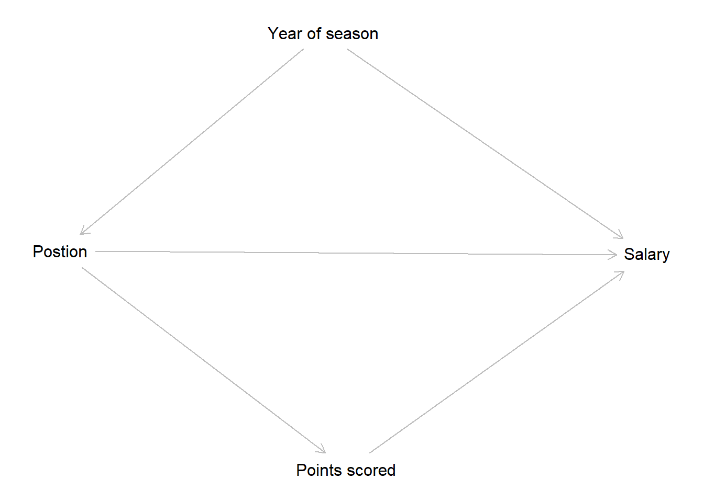
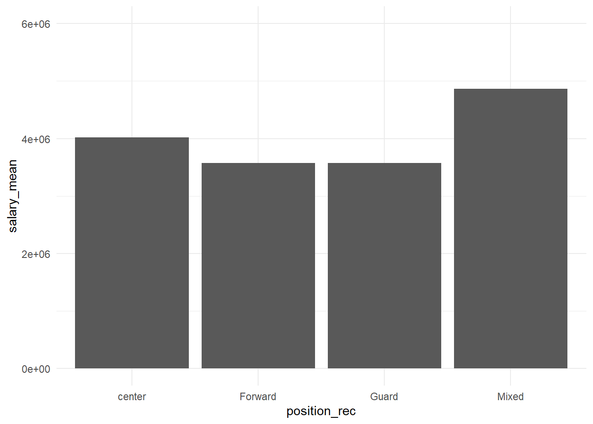

10 Mediation
In this week, we will introduce to the concept of mediation analysis.
10.2 R functions covered this week
dagitty(): This function creates and analyzes Directed Acyclic Graphs (DAGs).load(): This function is used to load an R object from a file. It takes a file name as an argument and returns the object stored in the file.mutate(): This function is from the dplyr package. It is used to add new columns or modify existing columns in a data frame. It takes a data frame and one or more expressions that define the new or modified columns. It returns a modified data frame.case_when(): This function is from the dplyr package. It is used to perform multiple conditional operations in a vectorized way. It takes one or more logical expressions and corresponding values, and returns a vector with the values that match the first true expression.group_by(): This function is from the dplyr package. It is used to group a data frame by one or more variables. It takes a data frame and one or more grouping variables, and returns a grouped data frame that can be further manipulated with other dplyr functions.summarize(): This function is from the dplyr package. It is used to summarize multiple values into a single value. It takes a grouped data frame and one or more expressions that calculate summary statistics, and returns a summarized data frame.ggplot(): This function is from the ggplot2 package. It is used to create a wide variety of static, dynamic, and interactive graphics in R. The function allows you to specify a mapping from data to aesthetics (color, shape, size) and geometric objects (points, lines, bars). It also allows you to add statistical transformations, coordinate systems, faceting, and themes.geom_bar(): This function is from the ggplot2 package. It is used to create bar charts in R. It takes a mapping from data to aesthetics and other arguments that control the appearance of the bars, such as stat, width, position, fill, color, etc. It returns a layer that can be added to a ggplot object.ylim(): This function is from the ggplot2 package. It is used to set the limits of the y-axis in a plot. It takes two numeric values that define the lower and upper limits of the y-axis. It returns a scale object that can be added to a ggplot object.theme_minimal(): This function is from the ggplot2 package. It is used to apply a minimal theme to a plot. It takes no arguments and returns a theme object that can be added to a ggplot object.lm(): This function is used to fit a linear model to the data. It takes a formula that specifies the dependent and independent variables, and a data frame that contains the variables. It returns a model object that can be used for further analysis.summary(): This function is used to get a summary of a model object, such as the coefficients, standard errors, t-values, p-values, R-squared, and F-statistic. It also provides information on the residuals, such as the minimum, maximum, median, and quartiles.modelsummary(): This function is from the modelsummary package. It is used to create tables that summarize multiple models side by side. It takes a list of model objects and other arguments that control the appearance of the table, such as output format, statistics to include, variable labels, etc. It returns an object that can be printed or saved as an image or file.mediate(): This function is from the mediation package. It is used to perform causal mediation analysis in R. It takes two model objects that specify the relationship between treatment and mediator (path_a), and between treatment, mediator and outcome (path_b), as well as other arguments that specify the treatment variable, mediator variable, treatment value, etc. It returns an object that contains the results of mediation analysis.summary.mediator(): This function is from the mediation package. It is used to get a summary of an object returned bymediate(). It takes an object of class mediator and other arguments that control the confidence intervals and p-values for mediation effects. It prints out a summary of mediation effects.
Mediation is a way of using (linear) regression with a different interest in mind. So far, we have been interested in estimating the effect of an x variable on a y variable. In our example using NBA data, we were interested in the effect of ‘points scored’ by a player on player salary. We learned how to “adjust” or “condition” the effect by adding covariates to the model (i.e. control variables). Going back to our week on DAGs, we saw that we want to control for so-called confounders, i.e. those variables which have an effect on both x and y. The “adjusted” effect is the “total causal effect” of x on y.
Mediation now is all about trying to explain “how” x affects y. Mediation analysis is about identifying the mechanism between x and y. In other words, what share of the total effect can be explained by something else (i.e. the mediator). When considering mediation, we can distinguish 3 types of effects:
- total effect (Effect of x on y (conditional on z), without mediator)
- direct effect (Effect of x on y (conditional on z), left after also adjusting for the mediator))
- indirect effect (The effect of x on y (conditional on z) which only goes through the mediator.
Go back to week X for a refresher.
Let’s turn to our NBA data to make this more tangible. Let’s assume now that we are interested in how a player’s position on the team affects his salary. Maybe guards feel discriminated because they earn less.
First, we identify the year of the season as a confounder which we want to adjust. Tactics over the years changed, so the year when games took place had an influence on whether a player would be assigned to the guard or forward position, for example. Also, the NBA become more popular, more fans means more money, and higher salaries for players. As a result, we will include “season_year” as a control variable.
Second, we have a hypothesis that the points scored on average affect the salaries. In the end, fans come to see spectacular dunks and shots, not rebounds and passes. Certain positions play further away from the basket (e.g. guards) and thus have a harder time scoring. They also are supposed to pass the ball to the big guys (usually centers). So maybe, the fact guards and forwards simply score less than centers explains their salary gap. We can test this using mediation.
To visualize this mini-theory and identification strategy, let’s have a look at this DAG.

Now let’s test this out using R.
- First, we load the data.
- Second, we reduce the position variable to 4 categories: Center, Guards, Forwards, and Mixed. As we will see, it is actually not common that players take on several roles even within the same season. This likely affects their
salaryas well. Players that can play multiple positions may get more playing time and as a result, score more. We are interested, however, in the difference between “pure” guards, forwards and centers, so we will run the analysis excluding “mixed” position players. - Third, we check whether there are any differences in average salaries by position using a graph and a table
- Fourth, we run a linear regression, regressing position (as factor variable) on
salarywhile adjusting for year of season.
# load packages
load(file = "../datasets/nba/data_nba.RData")
# recode "position" variables"
data_nba <- data_nba %>%
mutate(position_num = rowSums(across(c("position_center", "position_pf", "position_sf",
"position_pg", "position_sg"))),
position_rec =
case_when(
position_center==1 & position_num==1 ~ "center",
position_pf==1 & position_num==1 ~ "Forward",
position_sf==1 & position_num==1 ~ "Forward",
position_pg==1 & position_num==1 ~ "Guard",
position_sg==1 & position_num==1 ~ "Guard",
position_sg==1 & position_pg==1 & position_num==2 ~ "Guard",
position_pf==1 & position_sf==1 & position_num==2 ~ "Forward",
TRUE ~ "Mixed"))
# pot mean salary by position
data_nba %>% group_by(position_rec) %>%
summarize(salary_mean = mean(salary, rm.na =T)) %>%
ggplot() +
geom_bar(aes(x=position_rec, y=salary_mean), stat="identity") +
ylim(0,6000000) +
theme_minimal()
# linear regression
summary(lm(salary ~ as.factor(position_rec), data=data_nba, subset=(position_rec!="Mixed")))##
## Call:
## lm(formula = salary ~ as.factor(position_rec), data = data_nba,
## subset = (position_rec != "Mixed"))
##
## Residuals:
## Min 1Q Median 3Q Max
## -4011485 -2826365 -1708014 1102456 31105006
##
## Coefficients:
## Estimate Std. Error t value Pr(>|t|)
## (Intercept) 4016014 126850 31.659 < 2e-16 ***
## as.factor(position_rec)Forward -439249 158703 -2.768 0.00566 **
## as.factor(position_rec)Guard -438470 149803 -2.927 0.00343 **
## ---
## Signif. codes: 0 '***' 0.001 '**' 0.01 '*' 0.05 '.' 0.1 ' ' 1
##
## Residual standard error: 4402000 on 6382 degrees of freedom
## Multiple R-squared: 0.001519, Adjusted R-squared: 0.001206
## F-statistic: 4.855 on 2 and 6382 DF, p-value: 0.007821# adjust for confounder
summary(lm(salary ~ as.factor(position_rec) + as.factor(season_start), data=data_nba, subset=(position_rec!="Mixed")))##
## Call:
## lm(formula = salary ~ as.factor(position_rec) + as.factor(season_start),
## data = data_nba, subset = (position_rec != "Mixed"))
##
## Residuals:
## Min 1Q Median 3Q Max
## -5983717 -2733737 -1557867 1229567 29209309
##
## Coefficients:
## Estimate Std. Error t value Pr(>|t|)
## (Intercept) 2614310 272704 9.587 < 2e-16 ***
## as.factor(position_rec)Forward -510295 156308 -3.265 0.001102 **
## as.factor(position_rec)Guard -523632 147538 -3.549 0.000389 ***
## as.factor(season_start)1999 22191 334992 0.066 0.947186
## as.factor(season_start)2000 705147 348782 2.022 0.043245 *
## as.factor(season_start)2001 818596 352465 2.322 0.020238 *
## as.factor(season_start)2002 1035391 354870 2.918 0.003539 **
## as.factor(season_start)2003 1069793 359704 2.974 0.002950 **
## as.factor(season_start)2004 1117189 358397 3.117 0.001834 **
## as.factor(season_start)2005 1090880 354570 3.077 0.002102 **
## as.factor(season_start)2006 958637 352167 2.722 0.006504 **
## as.factor(season_start)2007 1654377 357706 4.625 3.82e-06 ***
## as.factor(season_start)2008 1944946 357392 5.442 5.46e-08 ***
## as.factor(season_start)2009 1832838 359404 5.100 3.50e-07 ***
## as.factor(season_start)2010 1748651 360028 4.857 1.22e-06 ***
## as.factor(season_start)2011 1582423 353355 4.478 7.66e-06 ***
## as.factor(season_start)2012 1651497 346695 4.764 1.94e-06 ***
## as.factor(season_start)2013 2121273 361746 5.864 4.75e-09 ***
## as.factor(season_start)2014 1243733 331916 3.747 0.000180 ***
## as.factor(season_start)2015 1804493 332700 5.424 6.05e-08 ***
## as.factor(season_start)2016 2645083 326043 8.113 5.89e-16 ***
## as.factor(season_start)2017 3382563 324615 10.420 < 2e-16 ***
## ---
## Signif. codes: 0 '***' 0.001 '**' 0.01 '*' 0.05 '.' 0.1 ' ' 1
##
## Residual standard error: 4327000 on 6363 degrees of freedom
## Multiple R-squared: 0.03774, Adjusted R-squared: 0.03456
## F-statistic: 11.88 on 21 and 6363 DF, p-value: < 2.2e-16Looking at the regression output, we see that, indeed, centers make more than guards and forwards. Actually, a lot less, approx. 500.000 USD less on average.
Let’s ignore for the moment that this is a terrible model. The r-squared is only 0.03 which means that position and season only explain ~ 3% of variation in salaries.
Now, we want to know whether scoring explain this salary penalty. Here is a simple mediation.
# let'S compare models side by side in a regression table
#install.packages("modelsummary")
library(modelsummary)
models <- list(
m1 = lm(salary ~ as.factor(position_rec) + as.factor(season_start), data=data_nba, subset=(position_rec!="Mixed")),
m2 <- lm(salary ~ as.factor(position_rec) + career_PTS + as.factor(season_start), data=data_nba, subset=(position_rec!="Mixed"))
)
modelsummary(models)| m1 | ||
|---|---|---|
| (Intercept) | 2614309.605 | −939410.632 |
| (272704.206) | (221569.259) | |
| as.factor(position_rec)Forward | −510295.017 | −1413516.300 |
| (156308.018) | (123630.475) | |
| as.factor(position_rec)Guard | −523632.304 | −2000142.285 |
| (147537.586) | (118260.027) | |
| as.factor(season_start)1999 | 22190.937 | 302958.632 |
| (334991.928) | (263200.021) | |
| as.factor(season_start)2000 | 705146.970 | 685025.470 |
| (348782.404) | (273995.766) | |
| as.factor(season_start)2001 | 818595.739 | 860051.794 |
| (352464.794) | (276889.168) | |
| as.factor(season_start)2002 | 1035390.857 | 1185765.987 |
| (354869.752) | (278787.933) | |
| as.factor(season_start)2003 | 1069793.041 | 1154734.396 |
| (359704.108) | (282578.656) | |
| as.factor(season_start)2004 | 1117189.300 | 1335647.564 |
| (358397.141) | (281570.162) | |
| as.factor(season_start)2005 | 1090880.186 | 1408951.168 |
| (354570.248) | (278588.367) | |
| as.factor(season_start)2006 | 958636.479 | 1404509.355 |
| (352166.838) | (276745.293) | |
| as.factor(season_start)2007 | 1654377.014 | 1740042.609 |
| (357705.703) | (281008.828) | |
| as.factor(season_start)2008 | 1944945.963 | 1844901.044 |
| (357392.398) | (280763.910) | |
| as.factor(season_start)2009 | 1832838.212 | 1469738.620 |
| (359403.707) | (282398.558) | |
| as.factor(season_start)2010 | 1748650.500 | 1381348.241 |
| (360027.993) | (282890.255) | |
| as.factor(season_start)2011 | 1582423.228 | 1261385.859 |
| (353354.876) | (277634.621) | |
| as.factor(season_start)2012 | 1651497.174 | 1339040.290 |
| (346694.638) | (272400.865) | |
| as.factor(season_start)2013 | 2121273.316 | 1360644.125 |
| (361745.546) | (284436.812) | |
| as.factor(season_start)2014 | 1243732.606 | 1141626.786 |
| (331915.955) | (260750.740) | |
| as.factor(season_start)2015 | 1804493.065 | 1543464.545 |
| (332699.559) | (261394.268) | |
| as.factor(season_start)2016 | 2645083.101 | 2527969.077 |
| (326042.835) | (256138.668) | |
| as.factor(season_start)2017 | 3382563.347 | 3172576.179 |
| (324614.892) | (255032.022) | |
| career_PTS | 545303.023 | |
| (8677.934) | ||
| Num.Obs. | 6385 | 6385 |
| R2 | 0.038 | 0.406 |
| R2 Adj. | 0.035 | 0.404 |
| AIC | 213275.6 | 210194.7 |
| BIC | 213431.1 | 210357.0 |
| Log.Lik. | −106614.789 | −105073.355 |
| F | 11.882 | 197.861 |
| RMSE | 4319963.19 | 3393398.83 |
At first look, our hypothesis actually does not seem to hold. When we adjust for points scored, the gap between centers, forwards and guards. This means that guards don’t make less because they make less points. Guards and forwards with average points, compared to centers with average points, make even less than centers, compared to when we do not account for points at all. This could mean that teams know that guards are important despite the fact that they score less.
Let’s use a new package for causal mediation analysis.
# now let's try a dedidcated package for mediation
library(mediation)
data_nba <- data_nba %>% mutate(position_rec = as.factor(position_rec),
season_start = as.factor(season_start),
salary = salary/10)
mean(data_nba$salary)## [1] 407263.3# first path from x to mediator
path_a <- lm(career_PTS ~ position_rec + season_start, data=data_nba, subset=(position_rec!="Mixed"))
# Now full model, x to mediator to y
path_b <- lm(salary ~ position_rec + career_PTS + season_start, data=data_nba, subset=(position_rec!="Mixed"))
# centers vs. forwards
results_mediation_forwards <- mediate(path_a, path_b,
treat = "position_rec", # x or main independent variable
mediator = "career_PTS",
treat.value = 1)
# centers vs. guards
results_mediation_guards <- mediate(path_a, path_b,
treat = "position_rec", # x or main independent variable
mediator = "career_PTS",
treat.value = 2)
summary(results_mediation_forwards)##
## Causal Mediation Analysis
##
## Quasi-Bayesian Confidence Intervals
##
## Estimate 95% CI Lower 95% CI Upper p-value
## ACME 9.03e+04 7.11e+04 109770.6 <2e-16 ***
## ADE -1.42e+05 -1.65e+05 -117872.5 <2e-16 ***
## Total Effect -5.13e+04 -8.29e+04 -21008.8 <2e-16 ***
## Prop. Mediated -1.82e+00 -4.92e+00 -0.9 <2e-16 ***
## ---
## Signif. codes: 0 '***' 0.001 '**' 0.01 '*' 0.05 '.' 0.1 ' ' 1
##
## Sample Size Used: 6385
##
##
## Simulations: 1000##
## Causal Mediation Analysis
##
## Quasi-Bayesian Confidence Intervals
##
## Estimate 95% CI Lower 95% CI Upper p-value
## ACME 9.06e+04 7.07e+04 1.09e+05 <2e-16 ***
## ADE -1.42e+05 -1.65e+05 -1.17e+05 <2e-16 ***
## Total Effect -5.11e+04 -8.12e+04 -2.22e+04 <2e-16 ***
## Prop. Mediated -1.79e+00 -4.36e+00 -9.10e-01 <2e-16 ***
## ---
## Signif. codes: 0 '***' 0.001 '**' 0.01 '*' 0.05 '.' 0.1 ' ' 1
##
## Sample Size Used: 6385
##
##
## Simulations: 1000# note: this dies not yet work. FOrwads and guards are the same. CHeck how to
# take different groups of the treatment variable. Problem is that the treatment
# variable is categorical.The output looks different. Let’s go through it step by step:
- ACME: Average Causal Mediation Effect - indirect effect, this is the effect of position through points on salary.
- ADE: Average Direct Effect - This is the direct effect of position on salary. + Total Effect: ADE and ACME together are the “total effect”
- Prop. Mediated. This is the proportion of the total effect that is “explained” by the indirect effect.
Let’s interpret this for our model:
- ACME: If only points could explain
salaries, Guards would make, on average 900.000 USD more than centers (because they actually score more points) - ADE: Adjusting for points, guards would make 1.4 Million USD less than centers
- Total Effect: Overall, guards actually make 500.000 USD less.
- Prop. Mediated. This is actually a negative value which makes no sense in this case. If points scored really “mediated” part of the total effect and had some explanatory power here, then we would see a positive percentage.
When you take a look at our first approach, where we just estimated both regression models side by side. The coefficient for position is the total effect when we don’t include the mediator in the model. The coefficient is the direct effect when we do include the mediator. The indirect effect is the total effect minus the direct effect (-1.400.000 - (-500.000) = -900.000).
In sum, Guards are disadvantaged. They receive less money than center, although, if the points were considered, they should make even more. There must be other reasons why guards earn less. We need to go back to theory and come up with new hypothesis.
10.3 Further Resources
- mediation: R Package for Causal Mediation Analysis: This article describes the mediation package for conducting causal mediation analysis in R. It explains how to use the mediate() function to estimate various quantities of interest, such as average causal mediation effects, average direct effects, total effects, and proportions mediated. It also shows how to perform sensitivity analysis and deal with multiple mediators and treatment noncompliance.
- Mediation Analysis – Advanced Statistics using R: This web page provides an introduction to mediation analysis using R. It covers the basic concepts, how to draw path diagrams, how to test mediation effects using different methods, such as Baron and Kenny (1986) method, Sobel test, and bootstrapping. It also provides code examples and exercises.
- Mediation Analysis in R from Scratch (with R code): This tutorial shows how to do mediation analysis in R from scratch. It demonstrates how to fit linear regression models for the mediator and the outcome, how to calculate the mediation effect and its standard error, and how to test its significance using a normal approximation or a bootstrap method.
- mediate function - RDocumentation: This web page documents the mediate() function from the mediation package. It provides a detailed description of the arguments, values, and methods of the function. It also gives some examples of how to use the function for different types of data and models.